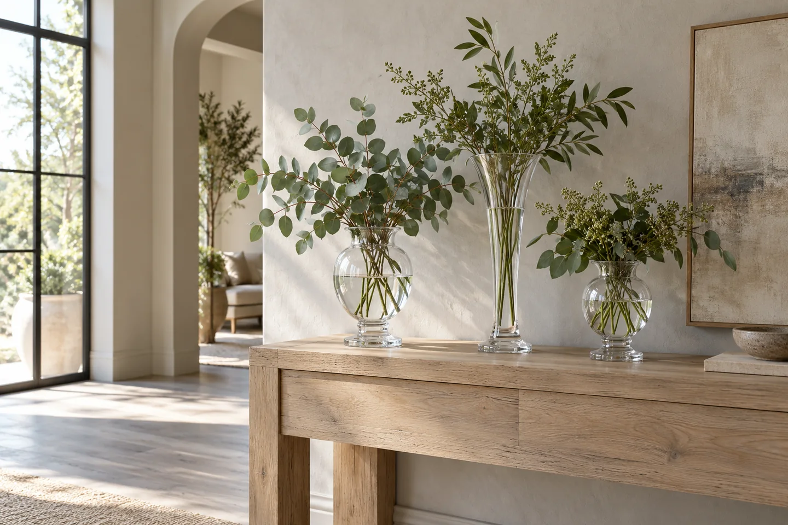
Composição ilustrativaUma vitrine com a sua identidade
Combine formas e tamanhos para criar composições que expressem o estilo da sua loja.
VIDRO, FORMAS E POSSIBILIDADES
Vasos, peças decorativas e utilidades em vidro para criar composições e ampliar as possibilidades da sua coleção.
PARA A SUA LOJA

Composição ilustrativaCombine formas e tamanhos para criar composições que expressem o estilo da sua loja.
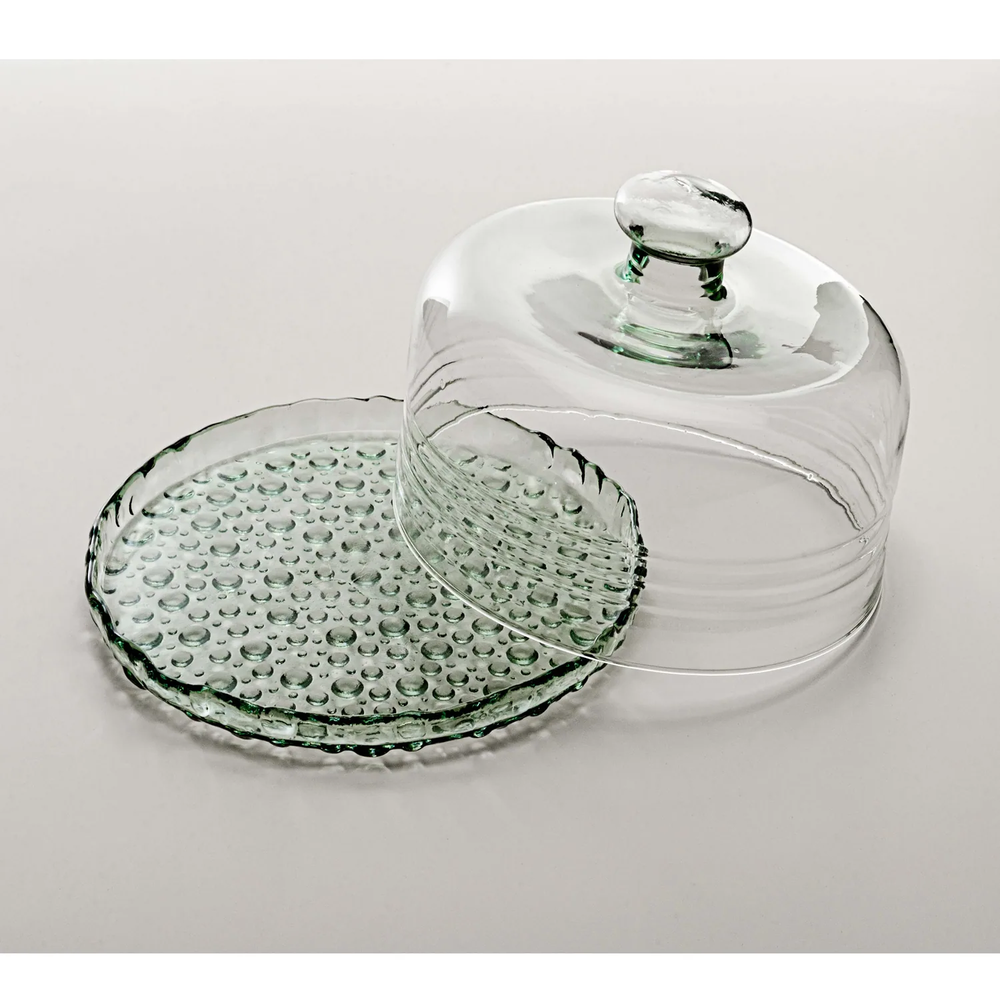
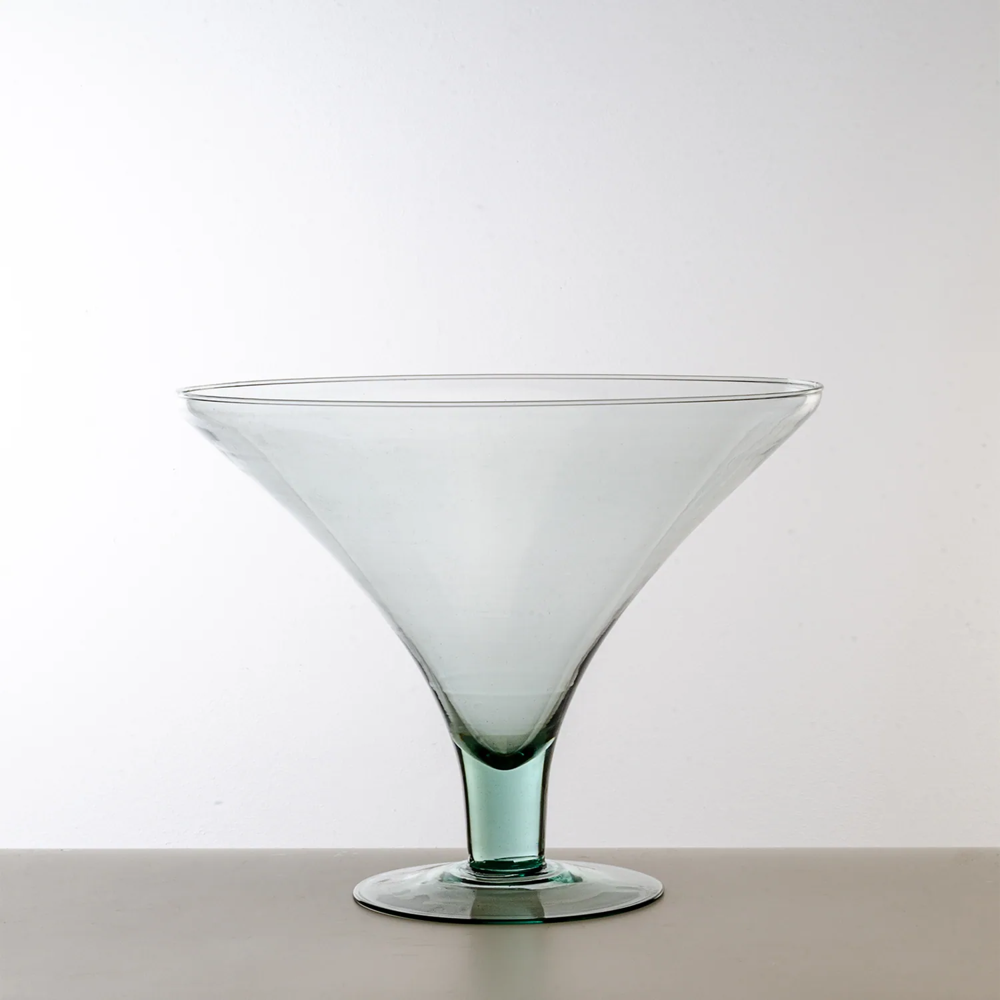
Reúna decoração e utilidades em vidro para diferentes ambientes e ocasiões.
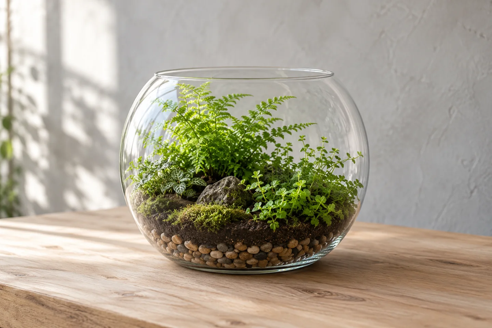
Composição ilustrativaExplore a linha ecológica com vidros reutilizáveis, que podem ganhar novas composições ao longo do tempo.
O CATÁLOGO
Escolha uma linha para ver seus modelos e referências. As categorias abrem o catálogo em uma nova aba.
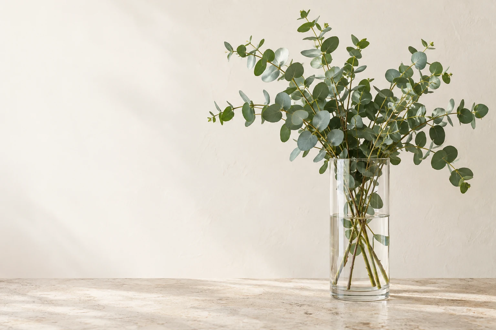
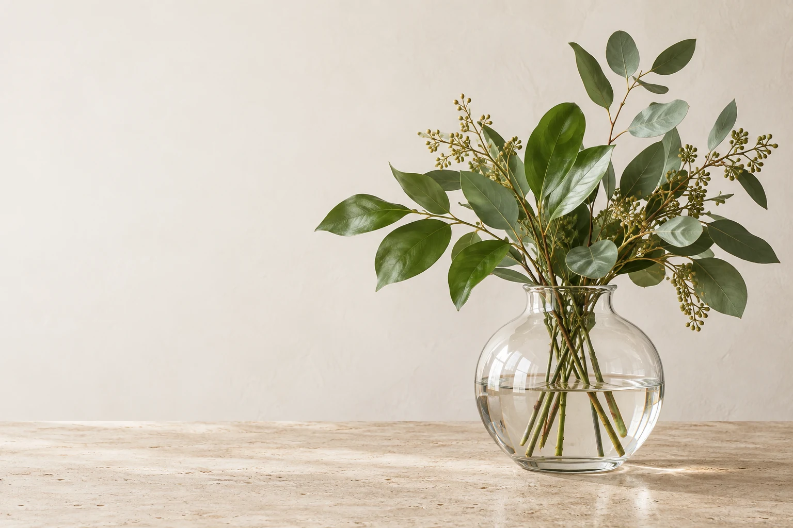
Para ambientes
cheios de vida.
A NOSSA HISTÓRIA
Desde 2009, a Crystalis reúne peças para decorar, servir e revender. Formas, tamanhos e acabamentos para diferentes espaços e negócios.
Conheça a Crystalis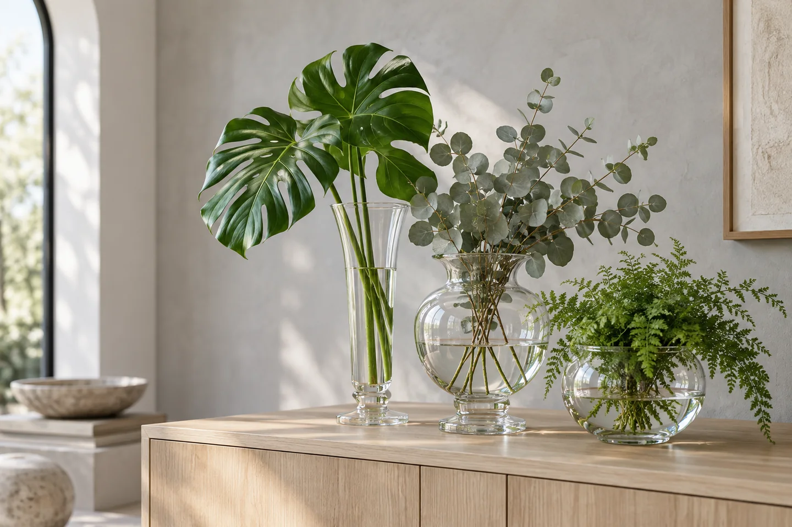
Composição ilustrativaUMA AMOSTRA DO CATÁLOGO
Consulte as peças pelo WhatsApp. O modelo e a referência já vão preenchidos.
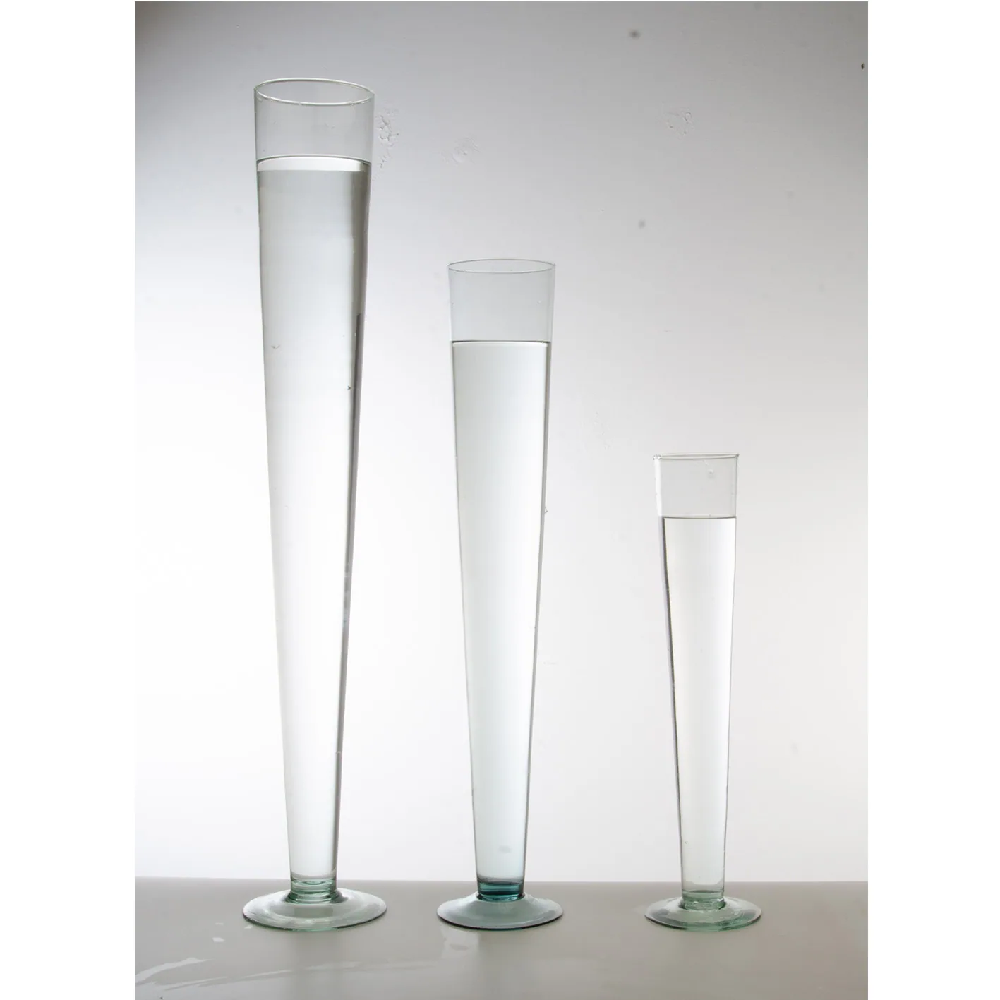
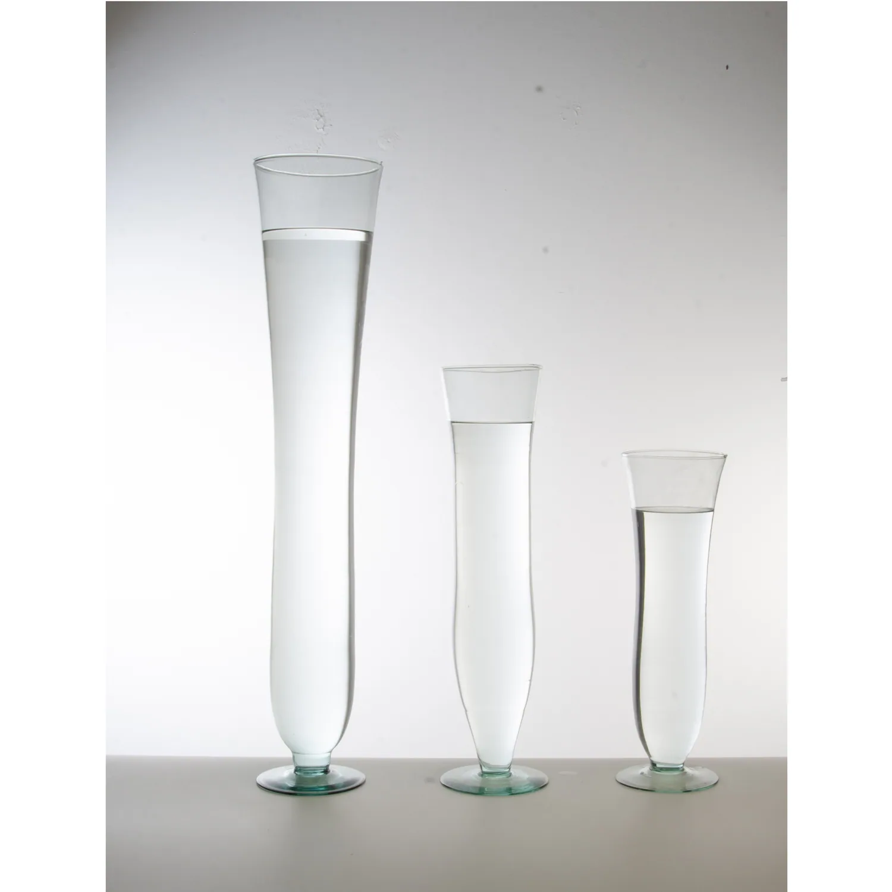
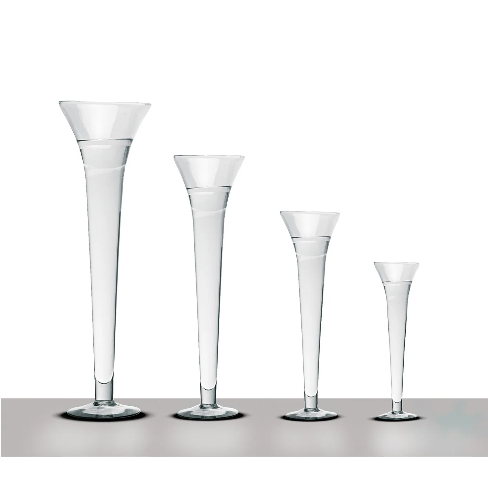
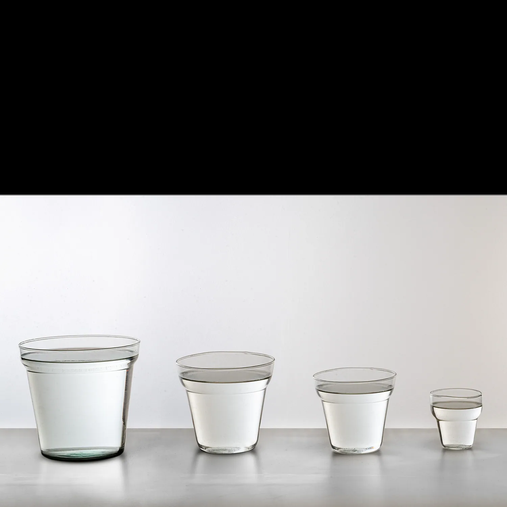
Peça para servir e apresentar
Foto da linha: Flor, Tulipa e Estrela
As fotos podem reunir tamanhos ou modelos da mesma linha. Cada consulta corresponde à peça e à referência indicadas no cartão. Para outros tamanhos, informe sua preferência à equipe.
LINHA ECOLÓGICA
Explore peças da Linha Ecológica da Crystalis e encontre novos usos para a decoração, eventos e ambientes comerciais.
Conhecer a linhaANTES DO SEU PEDIDO
Encontre as peças que fazem sentido para sua empresa e consulte nossa equipe.
Sim. O atendimento comercial é voltado a empresas que compram no atacado para revenda.
Escolha as peças no catálogo e envie suas referências pelo WhatsApp para consultar as condições de compra.
A proposta inclui vidros reutilizáveis, que podem ser aproveitados em novas composições. Conheça a linha ecológica.
PARA SUA EMPRESA
Envie os nomes ou referências das peças pelo WhatsApp e consulte as condições para o seu pedido.
Solicitar orçamento